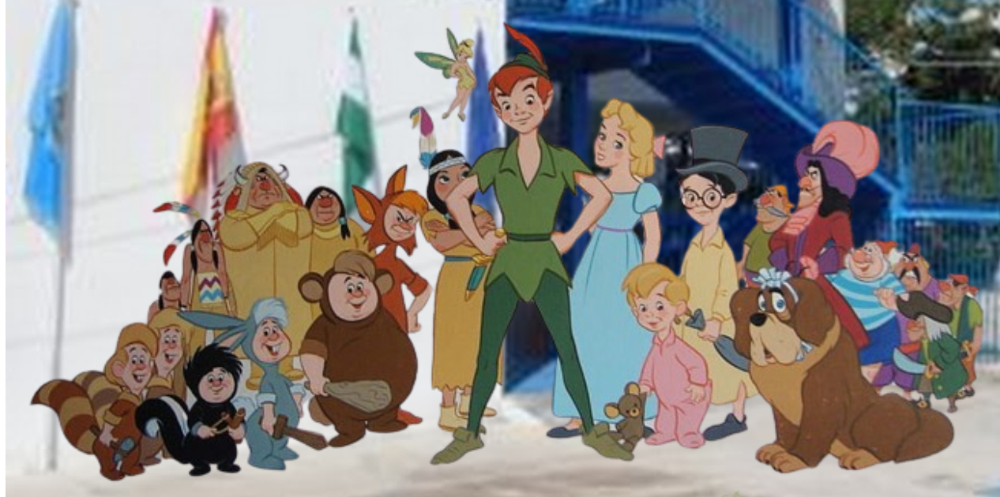

1. Autoría

| Título | Las aventuras de Peter Pan. Busqueda del Tesoro |
|---|---|
| Descripción |
Esta situación de aprendizaje se enmarca dentro del segundo trimestre y será llevada a cabo por todas las tutoras del ciclo de EI:. Esta propuesta de proyecto surge como consecuencia de la importancia que para los niños y niñas de estas edades tienen los cuentos. Los cuentos permiten que los pequeños se acerquen a su cultura, al mismo tiempo que favorece el desarrollo del lenguaje y de su imaginación. Además a través del cuento se crea un ambiente cercano donde la diversión y el aprendizaje van unidos, y se establece una realación de cercania entre maestra-alumnado, a la vez que, permite estimular y desarrollar distintas capaciadades: lenguaje, vocabulario, plástica, música, etc A partir de un mensaje de Peter Pan (genially motivador y guía), se inicia la lectura del cuento y el estudio del mismo: personajes, emosciones, lugares donde viven, actividades que realizan,... Los más pequeños iniciaran una aventura con Peter cuyo producto final será encontrar un tesoro que puedan guardar para toda su vida como recuerdo de lo vivido: el cuento de Peter Pan.Los distintos retos, que les servirán para conseguir trozos de mapa del tesoro, facilitarán el desarrollo y adquisición de las distintas competencias específicas planteadas a conseguir en el segundo trimestre. |
| Autoría | Lourdes Morales López |
| Licencia |
Este contenido ha sido creado con eXeLearning, el editor libre y de fuente abierta diseñado para crear recursos educativos.